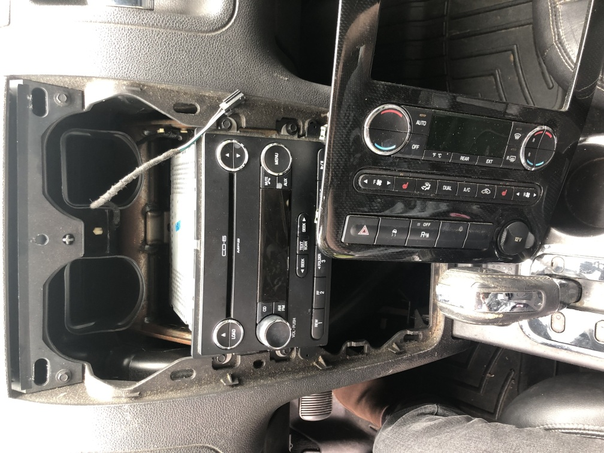
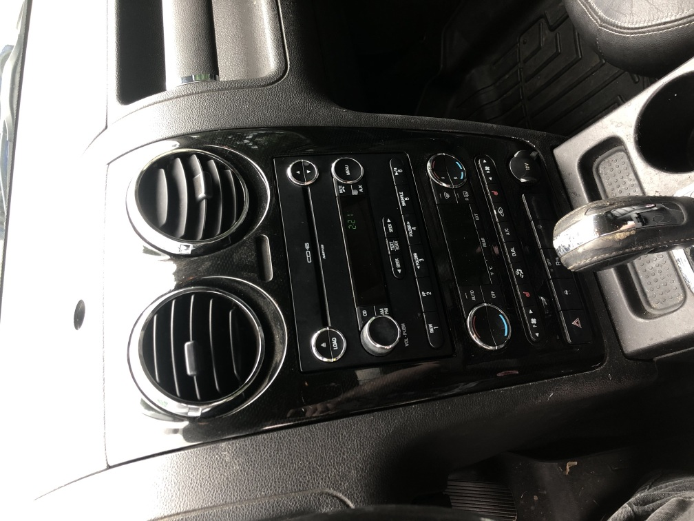
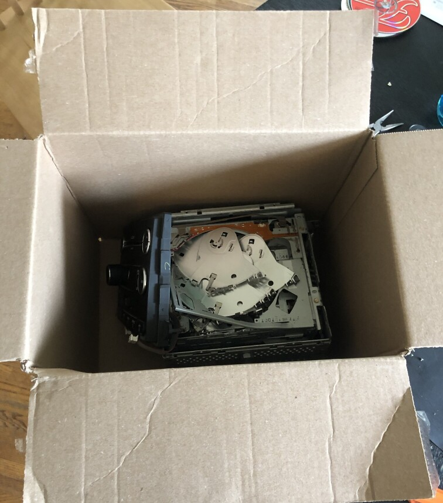

Today I successfully replaced the radio of my 2008 Ford Taurus X! The CD drive had gotten jammed at some point and hadn’t ever recovered, so we thought it might be a good idea to replace it so we have a (practically) fresh unit.
Maybe I’m just used to things being incredibly hard to repair nowadays, but honestly it was easier than I expected!
Taking off the control panel’s front was literally as simple as using your fingers to pry it off, and the radio was only held in with a bolt in each corner. Actually unbolting it was a bit of a pain though, since the front panel was wired to the car and in the way, and it would be more trouble than it was worth to unplug everything then plug it back in once the repair was done.
every single time the socket wrench was turned, my hand hit the panel xP so annoying
I will admit I lost a screw or two in the abyss below the control panel. Thankfully extendable magnets exist and I was able to get them out of there X3
The radio we bought to replace it didn’t look the best, it had a huge scuff on the display, and the paint on both of the seek buttons was completely worn down. BUT it had a working CD drive, and that was really all that mattered.
Oh yeah, strangely when installing the new radio, there were only two connectors on the back instead of three like on the old one..? I’m 99% sure the leftover connector was for Sirius XM, since everything else seemed to work okay when I gave it a test run (including the CD drive! was a bit skeptical since it was bought off of ebay haha).
I feel like I've always seen Sirius XM advertised on cars, but personally I've never seen anyone use it (does
anyone use it at all?? [yes, apparently]).
Since our old radio had some relatively cool CDs stuck in it (Foo Fighters was a big one) I thought I’d try taking it apart to recover them! The front display came off pretty easy, but after pulling it away from the mainboard I saw that it was connected through ribbon cables, which made me think that it would be possible to just swap out the entire display since it looked much better than the display on the new one.
Unfortunately this meant taking apart the Taurus’ control panel again, but I was willing to do that just to make everything look a little bit nicer.
Thankfully the display swap worked perfectly!! Now you can’t even tell that a new radio was put in.
tadaaaa!
Once everything was done and dusted with that, I went back to trying to recover the CDs in the old radio. I ended up having to basically destroy the top metal cover just to get inside, and tear apart each lock tab keeping the CDs in place. I’m not too disappointed though, it’s not like I was gonna use a broken radio anyway :3
Anyways, I guess I’m proud I managed to pull that off today! Never really had to work on a car before so this was a cool experience.
RIP old radio parts 🪦